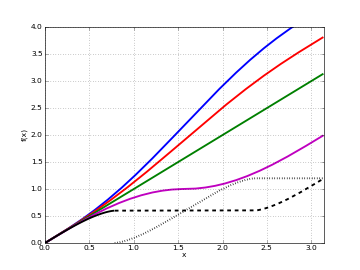
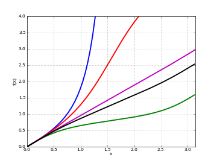

Elliptic functions¶
Elliptic functions historically comprise the elliptic integrals and their inverses, and originate from the problem of computing the arc length of an ellipse. From a more modern point of view, an elliptic function is defined as a doubly periodic function, i.e. a function which satisfies
for some half-periods \(\omega_1, \omega_2\) with \(\mathrm{Im}[\omega_1 / \omega_2] > 0\). The canonical elliptic functions are the Jacobi elliptic functions. More broadly, this section includes quasi-doubly periodic functions (such as the Jacobi theta functions) and other functions useful in the study of elliptic functions.
Many different conventions for the arguments of elliptic functions are in use. It is even standard to use different parameterizations for different functions in the same text or software (and mpmath is no exception). The usual parameters are the elliptic nome \(q\), which usually must satisfy \(|q| < 1\); the elliptic parameter \(m\) (an arbitrary complex number); the elliptic modulus \(k\) (an arbitrary complex number); and the half-period ratio \(\tau\), which usually must satisfy \(\mathrm{Im}[\tau] > 0\). These quantities can be expressed in terms of each other using the following relations:
In addition, an alternative definition is used for the nome in number theory, which we here denote by q-bar:
For convenience, mpmath provides functions to convert between the various parameters (qfrom(), mfrom(), kfrom(), taufrom(), qbarfrom()).
References
Elliptic arguments¶
qfrom()¶
- mpmath.qfrom(**kwargs)¶
Returns the elliptic nome \(q\), given any of \(q, m, k, \tau, \bar{q}\):
>>> from mpmath import * >>> mp.dps = 25; mp.pretty = True >>> qfrom(q=0.25) 0.25 >>> qfrom(m=mfrom(q=0.25)) 0.25 >>> qfrom(k=kfrom(q=0.25)) 0.25 >>> qfrom(tau=taufrom(q=0.25)) (0.25 + 0.0j) >>> qfrom(qbar=qbarfrom(q=0.25)) 0.25
qbarfrom()¶
- mpmath.qbarfrom(**kwargs)¶
Returns the number-theoretic nome \(\bar q\), given any of \(q, m, k, \tau, \bar{q}\):
>>> from mpmath import * >>> mp.dps = 25; mp.pretty = True >>> qbarfrom(qbar=0.25) 0.25 >>> qbarfrom(q=qfrom(qbar=0.25)) 0.25 >>> qbarfrom(m=extraprec(20)(mfrom)(qbar=0.25)) # ill-conditioned 0.25 >>> qbarfrom(k=extraprec(20)(kfrom)(qbar=0.25)) # ill-conditioned 0.25 >>> qbarfrom(tau=taufrom(qbar=0.25)) (0.25 + 0.0j)
mfrom()¶
- mpmath.mfrom(**kwargs)¶
Returns the elliptic parameter \(m\), given any of \(q, m, k, \tau, \bar{q}\):
>>> from mpmath import * >>> mp.dps = 25; mp.pretty = True >>> mfrom(m=0.25) 0.25 >>> mfrom(q=qfrom(m=0.25)) 0.25 >>> mfrom(k=kfrom(m=0.25)) 0.25 >>> mfrom(tau=taufrom(m=0.25)) (0.25 + 0.0j) >>> mfrom(qbar=qbarfrom(m=0.25)) 0.25
As \(q \to 1\) and \(q \to -1\), \(m\) rapidly approaches \(1\) and \(-\infty\) respectively:
>>> mfrom(q=0.75) 0.9999999999999798332943533 >>> mfrom(q=-0.75) -49586681013729.32611558353 >>> mfrom(q=1) 1.0 >>> mfrom(q=-1) -inf
The inverse nome as a function of \(q\) has an integer Taylor series expansion:
>>> taylor(lambda q: mfrom(q), 0, 7) [0.0, 16.0, -128.0, 704.0, -3072.0, 11488.0, -38400.0, 117632.0]
kfrom()¶
- mpmath.kfrom(**kwargs)¶
Returns the elliptic modulus \(k\), given any of \(q, m, k, \tau, \bar{q}\):
>>> from mpmath import * >>> mp.dps = 25; mp.pretty = True >>> kfrom(k=0.25) 0.25 >>> kfrom(m=mfrom(k=0.25)) 0.25 >>> kfrom(q=qfrom(k=0.25)) 0.25 >>> kfrom(tau=taufrom(k=0.25)) (0.25 + 0.0j) >>> kfrom(qbar=qbarfrom(k=0.25)) 0.25
As \(q \to 1\) and \(q \to -1\), \(k\) rapidly approaches \(1\) and \(i \infty\) respectively:
>>> kfrom(q=0.75) 0.9999999999999899166471767 >>> kfrom(q=-0.75) (0.0 + 7041781.096692038332790615j) >>> kfrom(q=1) 1 >>> kfrom(q=-1) (0.0 + +infj)
taufrom()¶
- mpmath.taufrom(**kwargs)¶
Returns the elliptic half-period ratio \(\tau\), given any of \(q, m, k, \tau, \bar{q}\):
>>> from mpmath import * >>> mp.dps = 25; mp.pretty = True >>> taufrom(tau=0.5j) (0.0 + 0.5j) >>> taufrom(q=qfrom(tau=0.5j)) (0.0 + 0.5j) >>> taufrom(m=mfrom(tau=0.5j)) (0.0 + 0.5j) >>> taufrom(k=kfrom(tau=0.5j)) (0.0 + 0.5j) >>> taufrom(qbar=qbarfrom(tau=0.5j)) (0.0 + 0.5j)
Legendre elliptic integrals¶
ellipk()¶
- mpmath.ellipk(m, **kwargs)¶
Evaluates the complete elliptic integral of the first kind, \(K(m)\), defined by
\[K(m) = \int_0^{\pi/2} \frac{dt}{\sqrt{1-m \sin^2 t}} \, = \, \frac{\pi}{2} \,_2F_1\left(\frac{1}{2}, \frac{1}{2}, 1, m\right).\]Note that the argument is the parameter \(m = k^2\), not the modulus \(k\) which is sometimes used.
Plots
# Complete elliptic integrals K(m) and E(m) plot([ellipk, ellipe], [-2,1], [0,3], points=600)

Examples
Values and limits include:
>>> from mpmath import * >>> mp.dps = 25; mp.pretty = True >>> ellipk(0) 1.570796326794896619231322 >>> ellipk(inf) (0.0 + 0.0j) >>> ellipk(-inf) 0.0 >>> ellipk(1) +inf >>> ellipk(-1) 1.31102877714605990523242 >>> ellipk(2) (1.31102877714605990523242 - 1.31102877714605990523242j)
Verifying the defining integral and hypergeometric representation:
>>> ellipk(0.5) 1.85407467730137191843385 >>> quad(lambda t: (1-0.5*sin(t)**2)**-0.5, [0, pi/2]) 1.85407467730137191843385 >>> pi/2*hyp2f1(0.5,0.5,1,0.5) 1.85407467730137191843385
Evaluation is supported for arbitrary complex \(m\):
>>> ellipk(3+4j) (0.9111955638049650086562171 + 0.6313342832413452438845091j)
A definite integral:
>>> quad(ellipk, [0, 1]) 2.0
ellipf()¶
- mpmath.ellipf(phi, m)¶
Evaluates the Legendre incomplete elliptic integral of the first kind
\[F(\phi,m) = \int_0^{\phi} \frac{dt}{\sqrt{1-m \sin^2 t}}\]or equivalently
\[F(\phi,m) = \int_0^{\sin z} \frac{dt}{\left(\sqrt{1-t^2}\right)\left(\sqrt{1-mt^2}\right)}.\]The function reduces to a complete elliptic integral of the first kind (see ellipk()) when \(\phi = \frac{\pi}{2}\); that is,
\[F\left(\frac{\pi}{2}, m\right) = K(m).\]In the defining integral, it is assumed that the principal branch of the square root is taken and that the path of integration avoids crossing any branch cuts. Outside \(-\pi/2 \le \Re(z) \le \pi/2\), the function extends quasi-periodically as
\[F(\phi + n \pi, m) = 2 n K(m) + F(\phi,m), n \in \mathbb{Z}.\]Plots
# Elliptic integral F(z,m) for some different m f1 = lambda z: ellipf(z,-1) f2 = lambda z: ellipf(z,-0.5) f3 = lambda z: ellipf(z,0) f4 = lambda z: ellipf(z,0.5) f5 = lambda z: ellipf(z,1) plot([f1,f2,f3,f4,f5], [0,pi], [0,4])

Examples
Basic values and limits:
>>> from mpmath import * >>> mp.dps = 25; mp.pretty = True >>> ellipf(0,1) 0.0 >>> ellipf(0,0) 0.0 >>> ellipf(1,0); ellipf(2+3j,0) 1.0 (2.0 + 3.0j) >>> ellipf(1,1); log(sec(1)+tan(1)) 1.226191170883517070813061 1.226191170883517070813061 >>> ellipf(pi/2, -0.5); ellipk(-0.5) 1.415737208425956198892166 1.415737208425956198892166 >>> ellipf(pi/2+eps, 1); ellipf(-pi/2-eps, 1) +inf +inf >>> ellipf(1.5, 1) 3.340677542798311003320813
Comparing with numerical integration:
>>> z,m = 0.5, 1.25 >>> ellipf(z,m) 0.5287219202206327872978255 >>> quad(lambda t: (1-m*sin(t)**2)**(-0.5), [0,z]) 0.5287219202206327872978255
The arguments may be complex numbers:
>>> ellipf(3j, 0.5) (0.0 + 1.713602407841590234804143j) >>> ellipf(3+4j, 5-6j) (1.269131241950351323305741 - 0.3561052815014558335412538j) >>> z,m = 2+3j, 1.25 >>> k = 1011 >>> ellipf(z+pi*k,m); ellipf(z,m) + 2*k*ellipk(m) (4086.184383622179764082821 - 3003.003538923749396546871j) (4086.184383622179764082821 - 3003.003538923749396546871j)
For \(|\Re(z)| < \pi/2\), the function can be expressed as a hypergeometric series of two variables (see appellf1()):
>>> z,m = 0.5, 0.25 >>> ellipf(z,m) 0.5050887275786480788831083 >>> sin(z)*appellf1(0.5,0.5,0.5,1.5,sin(z)**2,m*sin(z)**2) 0.5050887275786480788831083
ellipe()¶
- mpmath.ellipe(*args)¶
Called with a single argument \(m\), evaluates the Legendre complete elliptic integral of the second kind, \(E(m)\), defined by
\[E(m) = \int_0^{\pi/2} \sqrt{1-m \sin^2 t} \, dt \,=\, \frac{\pi}{2} \,_2F_1\left(\frac{1}{2}, -\frac{1}{2}, 1, m\right).\]Called with two arguments \(\phi, m\), evaluates the incomplete elliptic integral of the second kind
\[E(\phi,m) = \int_0^{\phi} \sqrt{1-m \sin^2 t} \, dt = \int_0^{\sin z} \frac{\sqrt{1-mt^2}}{\sqrt{1-t^2}} \, dt.\]The incomplete integral reduces to a complete integral when \(\phi = \frac{\pi}{2}\); that is,
\[E\left(\frac{\pi}{2}, m\right) = E(m).\]In the defining integral, it is assumed that the principal branch of the square root is taken and that the path of integration avoids crossing any branch cuts. Outside \(-\pi/2 \le \Re(z) \le \pi/2\), the function extends quasi-periodically as
\[E(\phi + n \pi, m) = 2 n E(m) + F(\phi,m), n \in \mathbb{Z}.\]Plots
# Elliptic integral E(z,m) for some different m f1 = lambda z: ellipe(z,-2) f2 = lambda z: ellipe(z,-1) f3 = lambda z: ellipe(z,0) f4 = lambda z: ellipe(z,1) f5 = lambda z: ellipe(z,2) plot([f1,f2,f3,f4,f5], [0,pi], [0,4])
Examples for the complete integral
Basic values and limits:
>>> from mpmath import * >>> mp.dps = 25; mp.pretty = True >>> ellipe(0) 1.570796326794896619231322 >>> ellipe(1) 1.0 >>> ellipe(-1) 1.910098894513856008952381 >>> ellipe(2) (0.5990701173677961037199612 + 0.5990701173677961037199612j) >>> ellipe(inf) (0.0 + +infj) >>> ellipe(-inf) +inf
Verifying the defining integral and hypergeometric representation:
>>> ellipe(0.5) 1.350643881047675502520175 >>> quad(lambda t: sqrt(1-0.5*sin(t)**2), [0, pi/2]) 1.350643881047675502520175 >>> pi/2*hyp2f1(0.5,-0.5,1,0.5) 1.350643881047675502520175
Evaluation is supported for arbitrary complex \(m\):
>>> ellipe(0.5+0.25j) (1.360868682163129682716687 - 0.1238733442561786843557315j) >>> ellipe(3+4j) (1.499553520933346954333612 - 1.577879007912758274533309j)
A definite integral:
>>> quad(ellipe, [0,1]) 1.333333333333333333333333
Examples for the incomplete integral
Basic values and limits:
>>> ellipe(0,1) 0.0 >>> ellipe(0,0) 0.0 >>> ellipe(1,0) 1.0 >>> ellipe(2+3j,0) (2.0 + 3.0j) >>> ellipe(1,1); sin(1) 0.8414709848078965066525023 0.8414709848078965066525023 >>> ellipe(pi/2, -0.5); ellipe(-0.5) 1.751771275694817862026502 1.751771275694817862026502 >>> ellipe(pi/2, 1); ellipe(-pi/2, 1) 1.0 -1.0 >>> ellipe(1.5, 1) 0.9974949866040544309417234
Comparing with numerical integration:
>>> z,m = 0.5, 1.25 >>> ellipe(z,m) 0.4740152182652628394264449 >>> quad(lambda t: sqrt(1-m*sin(t)**2), [0,z]) 0.4740152182652628394264449
The arguments may be complex numbers:
>>> ellipe(3j, 0.5) (0.0 + 7.551991234890371873502105j) >>> ellipe(3+4j, 5-6j) (24.15299022574220502424466 + 75.2503670480325997418156j) >>> k = 35 >>> z,m = 2+3j, 1.25 >>> ellipe(z+pi*k,m); ellipe(z,m) + 2*k*ellipe(m) (48.30138799412005235090766 + 17.47255216721987688224357j) (48.30138799412005235090766 + 17.47255216721987688224357j)
For \(|\Re(z)| < \pi/2\), the function can be expressed as a hypergeometric series of two variables (see appellf1()):
>>> z,m = 0.5, 0.25 >>> ellipe(z,m) 0.4950017030164151928870375 >>> sin(z)*appellf1(0.5,0.5,-0.5,1.5,sin(z)**2,m*sin(z)**2) 0.4950017030164151928870376
ellippi()¶
- mpmath.ellippi(*args)¶
Called with three arguments \(n, \phi, m\), evaluates the Legendre incomplete elliptic integral of the third kind
\[\Pi(n; \phi, m) = \int_0^{\phi} \frac{dt}{(1-n \sin^2 t) \sqrt{1-m \sin^2 t}} = \int_0^{\sin \phi} \frac{dt}{(1-nt^2) \sqrt{1-t^2} \sqrt{1-mt^2}}.\]Called with two arguments \(n, m\), evaluates the complete elliptic integral of the third kind \(\Pi(n,m) = \Pi(n; \frac{\pi}{2},m)\).
In the defining integral, it is assumed that the principal branch of the square root is taken and that the path of integration avoids crossing any branch cuts. Outside \(-\pi/2 \le \Re(z) \le \pi/2\), the function extends quasi-periodically as
\[\Pi(n,\phi+k\pi,m) = 2k\Pi(n,m) + \Pi(n,\phi,m), k \in \mathbb{Z}.\]Plots
# Elliptic integral Pi(n,z,m) for some different n, m f1 = lambda z: ellippi(0.9,z,0.9) f2 = lambda z: ellippi(0.5,z,0.5) f3 = lambda z: ellippi(-2,z,-0.9) f4 = lambda z: ellippi(-0.5,z,0.5) f5 = lambda z: ellippi(-1,z,0.5) plot([f1,f2,f3,f4,f5], [0,pi], [0,4])
Examples for the complete integral
Some basic values and limits:
>>> from mpmath import * >>> mp.dps = 25; mp.pretty = True >>> ellippi(0,-5); ellipk(-5) 0.9555039270640439337379334 0.9555039270640439337379334 >>> ellippi(inf,2) 0.0 >>> ellippi(2,inf) 0.0 >>> abs(ellippi(1,5)) +inf >>> abs(ellippi(0.25,1)) +inf
Evaluation in terms of simpler functions:
>>> ellippi(0.25,0.25); ellipe(0.25)/(1-0.25) 1.956616279119236207279727 1.956616279119236207279727 >>> ellippi(3,0); pi/(2*sqrt(-2)) (0.0 - 1.11072073453959156175397j) (0.0 - 1.11072073453959156175397j) >>> ellippi(-3,0); pi/(2*sqrt(4)) 0.7853981633974483096156609 0.7853981633974483096156609
Examples for the incomplete integral
Basic values and limits:
>>> ellippi(0.25,-0.5); ellippi(0.25,pi/2,-0.5) 1.622944760954741603710555 1.622944760954741603710555 >>> ellippi(1,0,1) 0.0 >>> ellippi(inf,0,1) 0.0 >>> ellippi(0,0.25,0.5); ellipf(0.25,0.5) 0.2513040086544925794134591 0.2513040086544925794134591 >>> ellippi(1,1,1); (log(sec(1)+tan(1))+sec(1)*tan(1))/2 2.054332933256248668692452 2.054332933256248668692452 >>> ellippi(0.25, 53*pi/2, 0.75); 53*ellippi(0.25,0.75) 135.240868757890840755058 135.240868757890840755058 >>> ellippi(0.5,pi/4,0.5); 2*ellipe(pi/4,0.5)-1/sqrt(3) 0.9190227391656969903987269 0.9190227391656969903987269
Complex arguments are supported:
>>> ellippi(0.5, 5+6j-2*pi, -7-8j) (-0.3612856620076747660410167 + 0.5217735339984807829755815j)
Carlson symmetric elliptic integrals¶
elliprf()¶
- mpmath.elliprf(x, y, z)¶
Evaluates the Carlson symmetric elliptic integral of the first kind
\[R_F(x,y,z) = \frac{1}{2} \int_0^{\infty} \frac{dt}{\sqrt{(t+x)(t+y)(t+z)}}\]which is defined for \(x,y,z \notin (-\infty,0)\), and with at most one of \(x,y,z\) being zero.
For real \(x,y,z \ge 0\), the principal square root is taken in the integrand. For complex \(x,y,z\), the principal square root is taken as \(t \to \infty\) and as \(t \to 0\) non-principal branches are chosen as necessary so as to make the integrand continuous.
Examples
Some basic values and limits:
>>> from mpmath import * >>> mp.dps = 25; mp.pretty = True >>> elliprf(0,1,1); pi/2 1.570796326794896619231322 1.570796326794896619231322 >>> elliprf(0,1,inf) 0.0 >>> elliprf(1,1,1) 1.0 >>> elliprf(2,2,2)**2 0.5 >>> elliprf(1,0,0); elliprf(0,0,1); elliprf(0,1,0); elliprf(0,0,0) +inf +inf +inf +inf
Representing complete elliptic integrals in terms of \(R_F\):
>>> m = mpf(0.75) >>> ellipk(m); elliprf(0,1-m,1) 2.156515647499643235438675 2.156515647499643235438675 >>> ellipe(m); elliprf(0,1-m,1)-m*elliprd(0,1-m,1)/3 1.211056027568459524803563 1.211056027568459524803563
Some symmetries and argument transformations:
>>> x,y,z = 2,3,4 >>> elliprf(x,y,z); elliprf(y,x,z); elliprf(z,y,x) 0.5840828416771517066928492 0.5840828416771517066928492 0.5840828416771517066928492 >>> k = mpf(100000) >>> elliprf(k*x,k*y,k*z); k**(-0.5) * elliprf(x,y,z) 0.001847032121923321253219284 0.001847032121923321253219284 >>> l = sqrt(x*y) + sqrt(y*z) + sqrt(z*x) >>> elliprf(x,y,z); 2*elliprf(x+l,y+l,z+l) 0.5840828416771517066928492 0.5840828416771517066928492 >>> elliprf((x+l)/4,(y+l)/4,(z+l)/4) 0.5840828416771517066928492
Comparing with numerical integration:
>>> x,y,z = 2,3,4 >>> elliprf(x,y,z) 0.5840828416771517066928492 >>> f = lambda t: 0.5*((t+x)*(t+y)*(t+z))**(-0.5) >>> q = extradps(25)(quad) >>> q(f, [0,inf]) 0.5840828416771517066928492
With the following arguments, the square root in the integrand becomes discontinuous at \(t = 1/2\) if the principal branch is used. To obtain the right value, \(-\sqrt{r}\) must be taken instead of \(\sqrt{r}\) on \(t \in (0, 1/2)\):
>>> x,y,z = j-1,j,0 >>> elliprf(x,y,z) (0.7961258658423391329305694 - 1.213856669836495986430094j) >>> -q(f, [0,0.5]) + q(f, [0.5,inf]) (0.7961258658423391329305694 - 1.213856669836495986430094j)
The so-called first lemniscate constant, a transcendental number:
>>> elliprf(0,1,2) 1.31102877714605990523242 >>> extradps(25)(quad)(lambda t: 1/sqrt(1-t**4), [0,1]) 1.31102877714605990523242 >>> gamma('1/4')**2/(4*sqrt(2*pi)) 1.31102877714605990523242
References
elliprc()¶
- mpmath.elliprc(x, y, pv=True)¶
Evaluates the degenerate Carlson symmetric elliptic integral of the first kind
\[R_C(x,y) = R_F(x,y,y) = \frac{1}{2} \int_0^{\infty} \frac{dt}{(t+y) \sqrt{(t+x)}}.\]If \(y \in (-\infty,0)\), either a value defined by continuity, or with pv=True the Cauchy principal value, can be computed.
If \(x \ge 0, y > 0\), the value can be expressed in terms of elementary functions as
\[\begin{split}R_C(x,y) = \begin{cases} \dfrac{1}{\sqrt{y-x}} \cos^{-1}\left(\sqrt{\dfrac{x}{y}}\right), & x < y \\ \dfrac{1}{\sqrt{y}}, & x = y \\ \dfrac{1}{\sqrt{x-y}} \cosh^{-1}\left(\sqrt{\dfrac{x}{y}}\right), & x > y \\ \end{cases}.\end{split}\]Examples
Some special values and limits:
>>> from mpmath import * >>> mp.dps = 25; mp.pretty = True >>> elliprc(1,2)*4; elliprc(0,1)*2; +pi 3.141592653589793238462643 3.141592653589793238462643 3.141592653589793238462643 >>> elliprc(1,0) +inf >>> elliprc(5,5)**2 0.2 >>> elliprc(1,inf); elliprc(inf,1); elliprc(inf,inf) 0.0 0.0 0.0
Comparing with the elementary closed-form solution:
>>> elliprc('1/3', '1/5'); sqrt(7.5)*acosh(sqrt('5/3')) 2.041630778983498390751238 2.041630778983498390751238 >>> elliprc('1/5', '1/3'); sqrt(7.5)*acos(sqrt('3/5')) 1.875180765206547065111085 1.875180765206547065111085
Comparing with numerical integration:
>>> q = extradps(25)(quad) >>> elliprc(2, -3, pv=True) 0.3333969101113672670749334 >>> elliprc(2, -3, pv=False) (0.3333969101113672670749334 + 0.7024814731040726393156375j) >>> 0.5*q(lambda t: 1/(sqrt(t+2)*(t-3)), [0,3-j,6,inf]) (0.3333969101113672670749334 + 0.7024814731040726393156375j)
elliprj()¶
- mpmath.elliprj(x, y, z, p)¶
Evaluates the Carlson symmetric elliptic integral of the third kind
\[R_J(x,y,z,p) = \frac{3}{2} \int_0^{\infty} \frac{dt}{(t+p)\sqrt{(t+x)(t+y)(t+z)}}.\]Like elliprf(), the branch of the square root in the integrand is defined so as to be continuous along the path of integration for complex values of the arguments.
Examples
Some values and limits:
>>> from mpmath import * >>> mp.dps = 25; mp.pretty = True >>> elliprj(1,1,1,1) 1.0 >>> elliprj(2,2,2,2); 1/(2*sqrt(2)) 0.3535533905932737622004222 0.3535533905932737622004222 >>> elliprj(0,1,2,2) 1.067937989667395702268688 >>> 3*(2*gamma('5/4')**2-pi**2/gamma('1/4')**2)/(sqrt(2*pi)) 1.067937989667395702268688 >>> elliprj(0,1,1,2); 3*pi*(2-sqrt(2))/4 1.380226776765915172432054 1.380226776765915172432054 >>> elliprj(1,3,2,0); elliprj(0,1,1,0); elliprj(0,0,0,0) +inf +inf +inf >>> elliprj(1,inf,1,0); elliprj(1,1,1,inf) 0.0 0.0 >>> chop(elliprj(1+j, 1-j, 1, 1)) 0.8505007163686739432927844
Scale transformation:
>>> x,y,z,p = 2,3,4,5 >>> k = mpf(100000) >>> elliprj(k*x,k*y,k*z,k*p); k**(-1.5)*elliprj(x,y,z,p) 4.521291677592745527851168e-9 4.521291677592745527851168e-9
Comparing with numerical integration:
>>> elliprj(1,2,3,4) 0.2398480997495677621758617 >>> f = lambda t: 1/((t+4)*sqrt((t+1)*(t+2)*(t+3))) >>> 1.5*quad(f, [0,inf]) 0.2398480997495677621758617 >>> elliprj(1,2+1j,3,4-2j) (0.216888906014633498739952 + 0.04081912627366673332369512j) >>> f = lambda t: 1/((t+4-2j)*sqrt((t+1)*(t+2+1j)*(t+3))) >>> 1.5*quad(f, [0,inf]) (0.216888906014633498739952 + 0.04081912627366673332369511j)
elliprd()¶
- mpmath.elliprd(x, y, z)¶
Evaluates the degenerate Carlson symmetric elliptic integral of the third kind or Carlson elliptic integral of the second kind \(R_D(x,y,z) = R_J(x,y,z,z)\).
See elliprj() for additional information.
Examples
>>> from mpmath import * >>> mp.dps = 25; mp.pretty = True >>> elliprd(1,2,3) 0.2904602810289906442326534 >>> elliprj(1,2,3,3) 0.2904602810289906442326534
The so-called second lemniscate constant, a transcendental number:
>>> elliprd(0,2,1)/3 0.5990701173677961037199612 >>> extradps(25)(quad)(lambda t: t**2/sqrt(1-t**4), [0,1]) 0.5990701173677961037199612 >>> gamma('3/4')**2/sqrt(2*pi) 0.5990701173677961037199612
elliprg()¶
- mpmath.elliprg(x, y, z)¶
Evaluates the Carlson completely symmetric elliptic integral of the second kind
\[R_G(x,y,z) = \frac{1}{4} \int_0^{\infty} \frac{t}{\sqrt{(t+x)(t+y)(t+z)}} \left( \frac{x}{t+x} + \frac{y}{t+y} + \frac{z}{t+z}\right) dt.\]Examples
Evaluation for real and complex arguments:
>>> from mpmath import * >>> mp.dps = 25; mp.pretty = True >>> elliprg(0,1,1)*4; +pi 3.141592653589793238462643 3.141592653589793238462643 >>> elliprg(0,0.5,1) 0.6753219405238377512600874 >>> chop(elliprg(1+j, 1-j, 2)) 1.172431327676416604532822
A double integral that can be evaluated in terms of \(R_G\):
>>> x,y,z = 2,3,4 >>> def f(t,u): ... st = fp.sin(t); ct = fp.cos(t) ... su = fp.sin(u); cu = fp.cos(u) ... return (x*(st*cu)**2 + y*(st*su)**2 + z*ct**2)**0.5 * st ... >>> nprint(mpf(fp.quad(f, [0,fp.pi], [0,2*fp.pi])/(4*fp.pi)), 13) 1.725503028069 >>> nprint(elliprg(x,y,z), 13) 1.725503028069
Jacobi theta functions¶
jtheta()¶
- mpmath.jtheta(n, z, q, derivative=0)¶
Computes the Jacobi theta function \(\vartheta_n(z, q)\), where \(n = 1, 2, 3, 4\), defined by the infinite series:
\[\vartheta_1(z,q) = 2 q^{1/4} \sum_{n=0}^{\infty} (-1)^n q^{n^2+n\,} \sin((2n+1)z)\]\[\vartheta_2(z,q) = 2 q^{1/4} \sum_{n=0}^{\infty} q^{n^{2\,} + n} \cos((2n+1)z)\]\[\vartheta_3(z,q) = 1 + 2 \sum_{n=1}^{\infty} q^{n^2\,} \cos(2 n z)\]\[\vartheta_4(z,q) = 1 + 2 \sum_{n=1}^{\infty} (-q)^{n^2\,} \cos(2 n z)\]The theta functions are functions of two variables:
- \(z\) is the argument, an arbitrary real or complex number
- \(q\) is the nome, which must be a real or complex number in the unit disk (i.e. \(|q| < 1\)). For \(|q| \ll 1\), the series converge very quickly, so the Jacobi theta functions can efficiently be evaluated to high precision.
The compact notations \(\vartheta_n(q) = \vartheta_n(0,q)\) and \(\vartheta_n = \vartheta_n(0,q)\) are also frequently encountered. Finally, Jacobi theta functions are frequently considered as functions of the half-period ratio \(\tau\) and then usually denoted by \(\vartheta_n(z|\tau)\).
Optionally, jtheta(n, z, q, derivative=d) with \(d > 0\) computes a \(d\)-th derivative with respect to \(z\).
Examples and basic properties
Considered as functions of \(z\), the Jacobi theta functions may be viewed as generalizations of the ordinary trigonometric functions cos and sin. They are periodic functions:
>>> from mpmath import * >>> mp.dps = 25; mp.pretty = True >>> jtheta(1, 0.25, '0.2') 0.2945120798627300045053104 >>> jtheta(1, 0.25 + 2*pi, '0.2') 0.2945120798627300045053104
Indeed, the series defining the theta functions are essentially trigonometric Fourier series. The coefficients can be retrieved using fourier():
>>> mp.dps = 10 >>> nprint(fourier(lambda x: jtheta(2, x, 0.5), [-pi, pi], 4)) ([0.0, 1.68179, 0.0, 0.420448, 0.0], [0.0, 0.0, 0.0, 0.0, 0.0])
The Jacobi theta functions are also so-called quasiperiodic functions of \(z\) and \(\tau\), meaning that for fixed \(\tau\), \(\vartheta_n(z, q)\) and \(\vartheta_n(z+\pi \tau, q)\) are the same except for an exponential factor:
>>> mp.dps = 25 >>> tau = 3*j/10 >>> q = exp(pi*j*tau) >>> z = 10 >>> jtheta(4, z+tau*pi, q) (-0.682420280786034687520568 + 1.526683999721399103332021j) >>> -exp(-2*j*z)/q * jtheta(4, z, q) (-0.682420280786034687520568 + 1.526683999721399103332021j)
The Jacobi theta functions satisfy a huge number of other functional equations, such as the following identity (valid for any \(q\)):
>>> q = mpf(3)/10 >>> jtheta(3,0,q)**4 6.823744089352763305137427 >>> jtheta(2,0,q)**4 + jtheta(4,0,q)**4 6.823744089352763305137427
Extensive listings of identities satisfied by the Jacobi theta functions can be found in standard reference works.
The Jacobi theta functions are related to the gamma function for special arguments:
>>> jtheta(3, 0, exp(-pi)) 1.086434811213308014575316 >>> pi**(1/4.) / gamma(3/4.) 1.086434811213308014575316
jtheta() supports arbitrary precision evaluation and complex arguments:
>>> mp.dps = 50 >>> jtheta(4, sqrt(2), 0.5) 2.0549510717571539127004115835148878097035750653737 >>> mp.dps = 25 >>> jtheta(4, 1+2j, (1+j)/5) (7.180331760146805926356634 - 1.634292858119162417301683j)
Evaluation of derivatives:
>>> mp.dps = 25 >>> jtheta(1, 7, 0.25, 1); diff(lambda z: jtheta(1, z, 0.25), 7) 1.209857192844475388637236 1.209857192844475388637236 >>> jtheta(1, 7, 0.25, 2); diff(lambda z: jtheta(1, z, 0.25), 7, 2) -0.2598718791650217206533052 -0.2598718791650217206533052 >>> jtheta(2, 7, 0.25, 1); diff(lambda z: jtheta(2, z, 0.25), 7) -1.150231437070259644461474 -1.150231437070259644461474 >>> jtheta(2, 7, 0.25, 2); diff(lambda z: jtheta(2, z, 0.25), 7, 2) -0.6226636990043777445898114 -0.6226636990043777445898114 >>> jtheta(3, 7, 0.25, 1); diff(lambda z: jtheta(3, z, 0.25), 7) -0.9990312046096634316587882 -0.9990312046096634316587882 >>> jtheta(3, 7, 0.25, 2); diff(lambda z: jtheta(3, z, 0.25), 7, 2) -0.1530388693066334936151174 -0.1530388693066334936151174 >>> jtheta(4, 7, 0.25, 1); diff(lambda z: jtheta(4, z, 0.25), 7) 0.9820995967262793943571139 0.9820995967262793943571139 >>> jtheta(4, 7, 0.25, 2); diff(lambda z: jtheta(4, z, 0.25), 7, 2) 0.3936902850291437081667755 0.3936902850291437081667755
Possible issues
For \(|q| \ge 1\) or \(\Im(\tau) \le 0\), jtheta() raises ValueError. This exception is also raised for \(|q|\) extremely close to 1 (or equivalently \(\tau\) very close to 0), since the series would converge too slowly:
>>> jtheta(1, 10, 0.99999999 * exp(0.5*j)) Traceback (most recent call last): ... ValueError: abs(q) > THETA_Q_LIM = 1.000000
Jacobi elliptic functions¶
ellipfun()¶
- mpmath.ellipfun(kind, u=None, m=None, q=None, k=None, tau=None)¶
Computes any of the Jacobi elliptic functions, defined in terms of Jacobi theta functions as
\[\mathrm{sn}(u,m) = \frac{\vartheta_3(0,q)}{\vartheta_2(0,q)} \frac{\vartheta_1(t,q)}{\vartheta_4(t,q)}\]\[\mathrm{cn}(u,m) = \frac{\vartheta_4(0,q)}{\vartheta_2(0,q)} \frac{\vartheta_2(t,q)}{\vartheta_4(t,q)}\]\[\mathrm{dn}(u,m) = \frac{\vartheta_4(0,q)}{\vartheta_3(0,q)} \frac{\vartheta_3(t,q)}{\vartheta_4(t,q)},\]or more generally computes a ratio of two such functions. Here \(t = u/\vartheta_3(0,q)^2\), and \(q = q(m)\) denotes the nome (see nome()). Optionally, you can specify the nome directly instead of \(m\) by passing q=<value>, or you can directly specify the elliptic parameter \(k\) with k=<value>.
The first argument should be a two-character string specifying the function using any combination of 's', 'c', 'd', 'n'. These letters respectively denote the basic functions \(\mathrm{sn}(u,m)\), \(\mathrm{cn}(u,m)\), \(\mathrm{dn}(u,m)\), and \(1\). The identifier specifies the ratio of two such functions. For example, 'ns' identifies the function
\[\mathrm{ns}(u,m) = \frac{1}{\mathrm{sn}(u,m)}\]and 'cd' identifies the function
\[\mathrm{cd}(u,m) = \frac{\mathrm{cn}(u,m)}{\mathrm{dn}(u,m)}.\]If called with only the first argument, a function object evaluating the chosen function for given arguments is returned.
Examples
Basic evaluation:
>>> from mpmath import * >>> mp.dps = 25; mp.pretty = True >>> ellipfun('cd', 3.5, 0.5) -0.9891101840595543931308394 >>> ellipfun('cd', 3.5, q=0.25) 0.07111979240214668158441418
The sn-function is doubly periodic in the complex plane with periods \(4 K(m)\) and \(2 i K(1-m)\) (see ellipk()):
>>> sn = ellipfun('sn') >>> sn(2, 0.25) 0.9628981775982774425751399 >>> sn(2+4*ellipk(0.25), 0.25) 0.9628981775982774425751399 >>> chop(sn(2+2*j*ellipk(1-0.25), 0.25)) 0.9628981775982774425751399
The cn-function is doubly periodic with periods \(4 K(m)\) and \(4 i K(1-m)\):
>>> cn = ellipfun('cn') >>> cn(2, 0.25) -0.2698649654510865792581416 >>> cn(2+4*ellipk(0.25), 0.25) -0.2698649654510865792581416 >>> chop(cn(2+4*j*ellipk(1-0.25), 0.25)) -0.2698649654510865792581416
The dn-function is doubly periodic with periods \(2 K(m)\) and \(4 i K(1-m)\):
>>> dn = ellipfun('dn') >>> dn(2, 0.25) 0.8764740583123262286931578 >>> dn(2+2*ellipk(0.25), 0.25) 0.8764740583123262286931578 >>> chop(dn(2+4*j*ellipk(1-0.25), 0.25)) 0.8764740583123262286931578
Modular functions¶
kleinj()¶
- mpmath.kleinj(tau=None, **kwargs)¶
Evaluates the Klein j-invariant, which is a modular function defined for \(\tau\) in the upper half-plane as
\[J(\tau) = \frac{g_2^3(\tau)}{g_2^3(\tau) - 27 g_3^2(\tau)}\]where \(g_2\) and \(g_3\) are the modular invariants of the Weierstrass elliptic function,
\[g_2(\tau) = 60 \sum_{(m,n) \in \mathbb{Z}^2 \setminus (0,0)} (m \tau+n)^{-4}\]\[g_3(\tau) = 140 \sum_{(m,n) \in \mathbb{Z}^2 \setminus (0,0)} (m \tau+n)^{-6}.\]An alternative, common notation is that of the j-function \(j(\tau) = 1728 J(\tau)\).
Plots
# Klein J-function as function of the number-theoretic nome fp.cplot(lambda q: fp.kleinj(qbar=q), [-1,1], [-1,1], points=50000)

# Klein J-function as function of the half-period ratio fp.cplot(lambda t: fp.kleinj(tau=t), [-1,2], [0,1.5], points=50000)

Examples
Verifying the functional equation \(J(\tau) = J(\tau+1) = J(-\tau^{-1})\):
>>> from mpmath import * >>> mp.dps = 25; mp.pretty = True >>> tau = 0.625+0.75*j >>> tau = 0.625+0.75*j >>> kleinj(tau) (-0.1507492166511182267125242 + 0.07595948379084571927228948j) >>> kleinj(tau+1) (-0.1507492166511182267125242 + 0.07595948379084571927228948j) >>> kleinj(-1/tau) (-0.1507492166511182267125242 + 0.07595948379084571927228946j)
The j-function has a famous Laurent series expansion in terms of the nome \(\bar{q}\), \(j(\tau) = \bar{q}^{-1} + 744 + 196884\bar{q} + \ldots\):
>>> mp.dps = 15 >>> taylor(lambda q: 1728*q*kleinj(qbar=q), 0, 5, singular=True) [1.0, 744.0, 196884.0, 21493760.0, 864299970.0, 20245856256.0]
The j-function admits exact evaluation at special algebraic points related to the Heegner numbers 1, 2, 3, 7, 11, 19, 43, 67, 163:
>>> @extraprec(10) ... def h(n): ... v = (1+sqrt(n)*j) ... if n > 2: ... v *= 0.5 ... return v ... >>> mp.dps = 25 >>> for n in [1,2,3,7,11,19,43,67,163]: ... n, chop(1728*kleinj(h(n))) ... (1, 1728.0) (2, 8000.0) (3, 0.0) (7, -3375.0) (11, -32768.0) (19, -884736.0) (43, -884736000.0) (67, -147197952000.0) (163, -262537412640768000.0)
Also at other special points, the j-function assumes explicit algebraic values, e.g.:
>>> chop(1728*kleinj(j*sqrt(5))) 1264538.909475140509320227 >>> identify(cbrt(_)) # note: not simplified '((100+sqrt(13520))/2)' >>> (50+26*sqrt(5))**3 1264538.909475140509320227